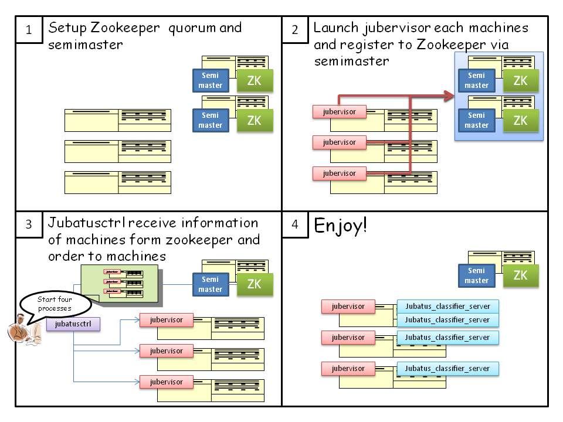

Architecture¶
Jubatus は、クライアント-サーバ型のアーキテクチャを持つ。 最も基本的なプロセス構成は、以下の図に示すように、単一の Jubatus クライアントと単一の Jubatus サーバの組み合わせである。

Jubatus は、処理をスケールアウトさせるために、複数のサーバプロセスを利用することが可能である。 クライアントから Keeper に対してクエリーを投げることで、複数のサーバプロセスで分散して学習や解析を行うことができる。
Keeper はクライアントからのクエリーを、適切な (1 台または複数台の) サーバに中継 (プロキシ) する。 このとき、クライアントからはあたかも 1 台のサーバと通信しているように見える。 言い換えると、クライアントは接続先が単一の Jubatus サーバであるか、Keeper であるかを意識する必要がない。
Keeper は、各 Jubatus サーバの死活監視および負荷分散のために ZooKeeper を利用する。

Jubatus では、データ量が膨大である、データソースが離れているなどの理由でクライアントを分散させることも可能である。 この場合は、複数の Keeper を実行して、それぞれのクライアントに異なる Keeper を割り当てる。

以下の図は、管理用プロセスの実行方法を表す。 なお、”semimaster”, “jubatusctrl” および “jubatus_classifier_server” は、現在ではそれぞれ “keeper”, “jubactl” および “jubaclassifier” と呼ばれている。
